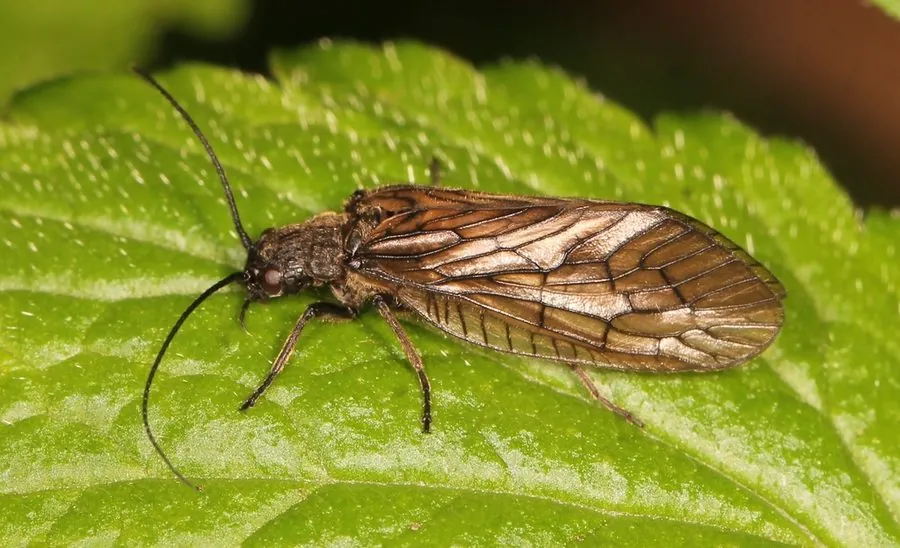

昆虫 · 动物界
泥蛉 Sialis lutaria

外形像石蛾、翅膀呈黑褐色的水生昆虫，幼虫生活在溪流和湖泊的泥底，成虫出水后寿命很短，是水质较好的指示物种。
- 分类
- 门节肢动物门纲昆虫纲目广翅目科泥蛉科属泥蛉属
- 栖息环境
- 溪流、湖泊和池塘的泥底，幼虫水生，成虫在水边活动
- 地理分布
- 欧亚大陆的淡水水域，中国北方和中部有分布
- 保护级别
- 暂无评估
物种志
泥蛉成虫体长 15–20 mm，翅展 25–35 mm，体色黑褐或灰黑，翅膜质、呈褐色，停息时折叠在背上；触角长而多节。它的外形与石蛾有些相似，但翅膀上的脉纹不同。
泥蛉分布于欧亚大陆的淡水水域。幼虫水生，生活在溪流、湖泊和池塘的泥底，捕食小型水生动物，需要 1–2 年才能完成发育。成虫多在春季羽化，出水后寿命仅数天至两周，主要任务是交配产卵。幼虫对水质有一定要求，是水环境监测的参考物种。泥蛉的成虫飞行能力不强，常停在水边的植物和石头上，是春季溪边常见的昆虫。目前它没有IUCN 的正式评估，中国未将其列入国家重点保护野生动物名录。
形态与习性
- 食性幼虫捕食水生昆虫和蠕虫，成虫口器退化、基本不取食
- 体长15–20 mm，翅展 25–35 mm
- 幼虫栖息溪流、湖泊和池塘的泥底
- 生活史幼虫水生，需 1–2 年完成发育
- 成虫寿命羽化后只能活数天至两周
- 水质指示幼虫对水质有一定要求，可作水环境监测参考
趣味知识
- 泥蛉的幼虫生活在水底泥中，成虫羽化后只能活几天到两周。
- 它停息时把褐色翅膀折叠在背上，外形很像石蛾。
- 泥蛉的幼虫是水底的小型捕食者，吃水生昆虫和蠕虫。